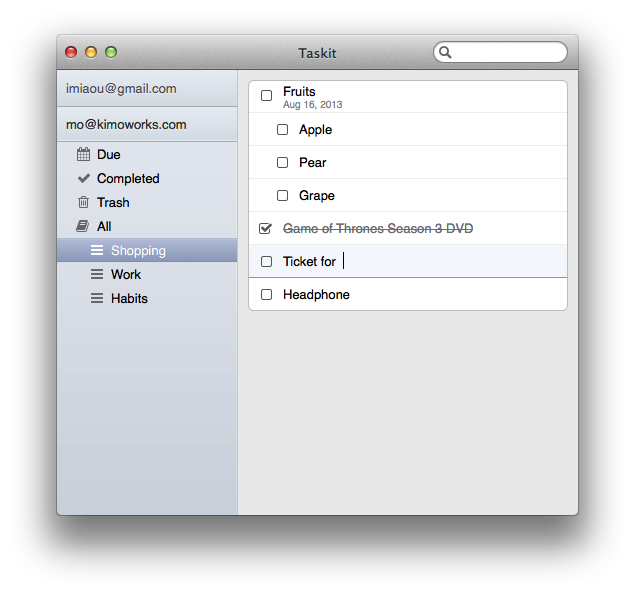

Taskit for Mac
Managing Google Tasks(TM) on Mac easily.
$10Requires Mac OS X 10.8 or later

Sync
Fully sync with Google Tasks.
Multiple accounts
You can manage as many accounts as you like.
Offline support
Access and edit your tasks even when you are offline. And it's super fast.
Editing
Editing as the same way as you always do.